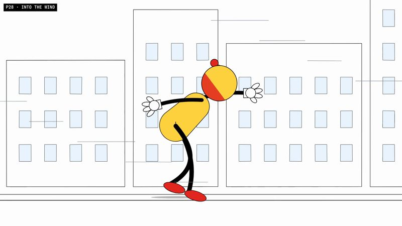
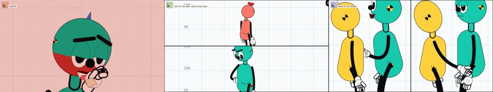
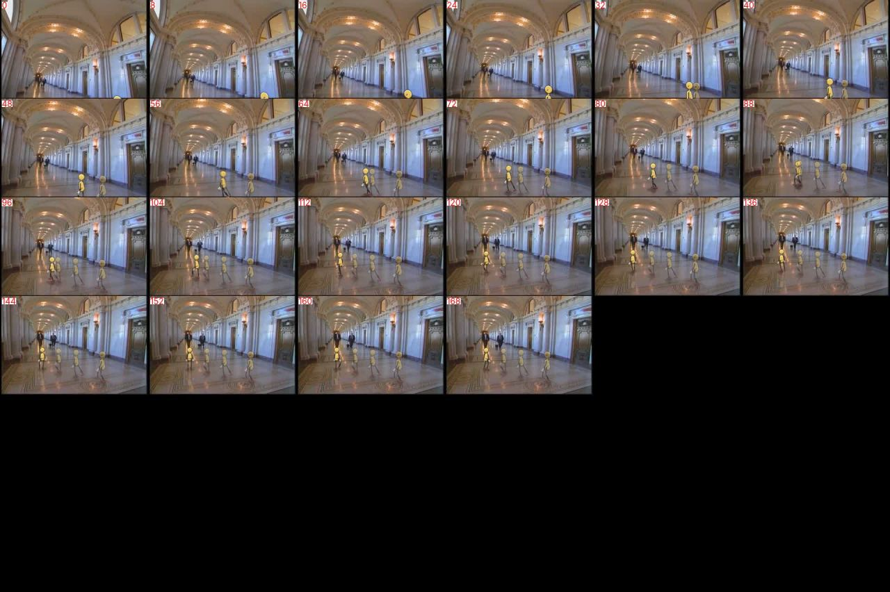
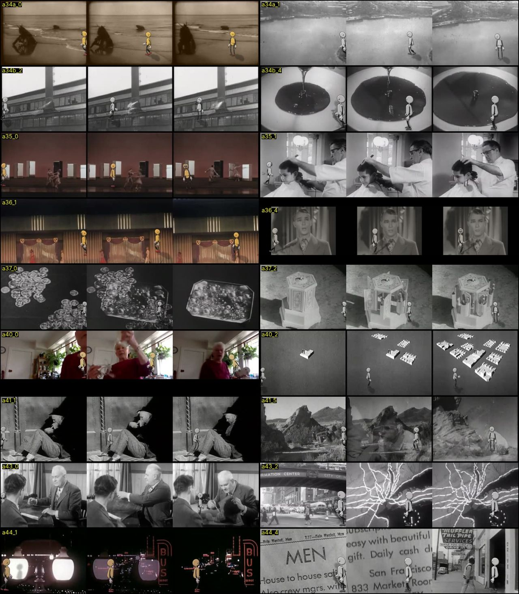
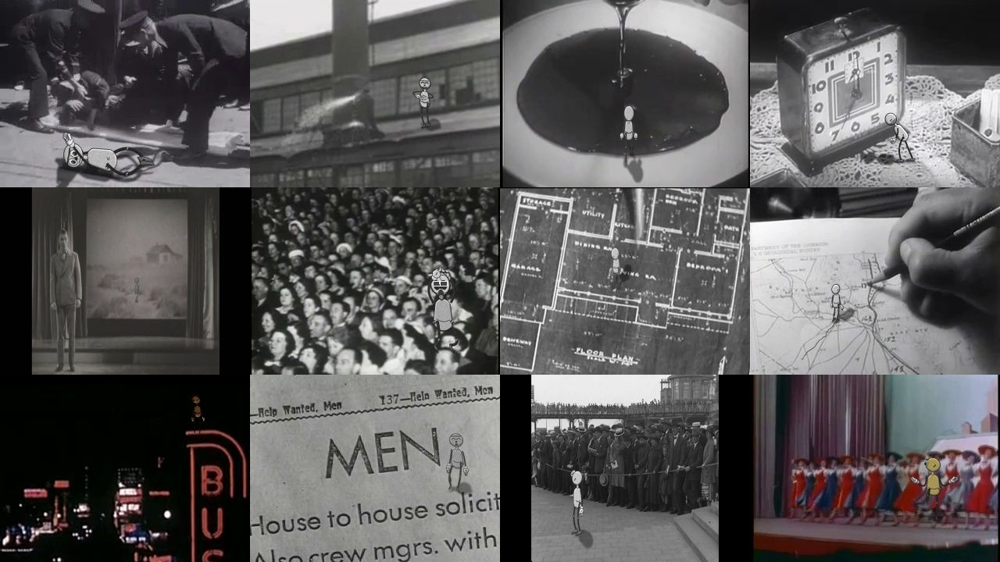
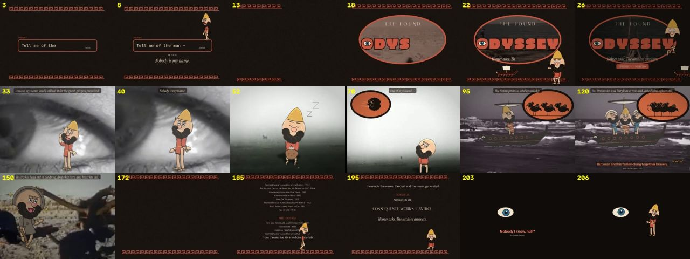
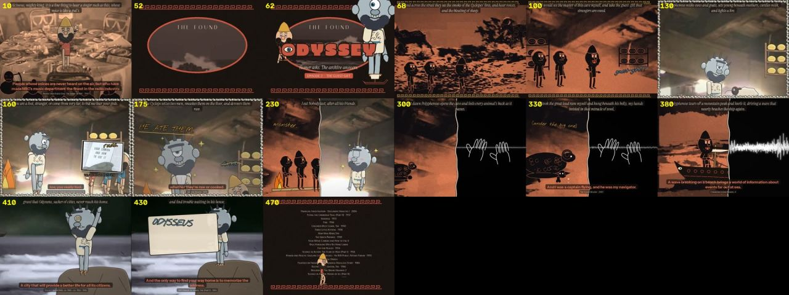
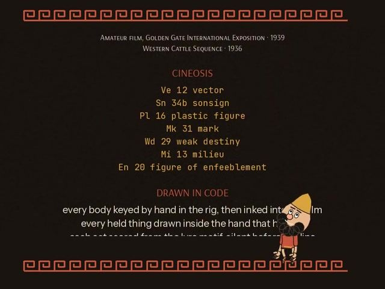
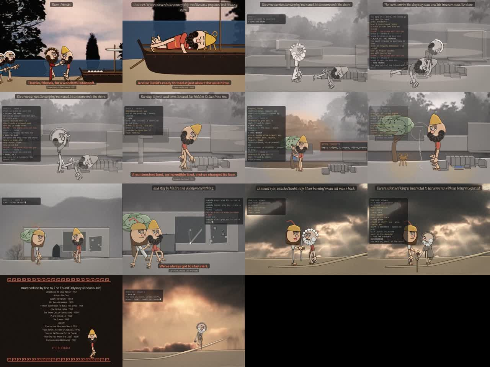

Home / Process
Process · 18 case studies
How it was made
Every stage of the work, from the first stick figure to the paper poet, written up as a case study: the question it asked, how it was made, what broke, what changed, and what it teaches that the others do not. Each case links to the next, so they can be read in order.
The Crash-Test Family
Three test dummies in a measured bay. Every touch, step and fall is scored for where the weight is, whether the feet hold and whether a hand lands where it was sent.
 02
Bolas range testHow far can the skeleton move, and can a filmed person be measured the same way?Teaches Know the limits of the body before asking it to act. An acted scene that breaks a joint limit reads as wrong even when nobody can say why.
02
Bolas range testHow far can the skeleton move, and can a filmed person be measured the same way?Teaches Know the limits of the body before asking it to act. An acted scene that breaks a joint limit reads as wrong even when nobody can say why.
 03
The PhysicalCan cartoon gags be written as joint motions and audited?Teaches A gag is a list of joints in an order. Writing it that way shows which gags are really the same gag.
03
The PhysicalCan cartoon gags be written as joint motions and audited?Teaches A gag is a list of joints in an order. Writing it that way shows which gags are really the same gag.

04 Dramaturgy Crash LabCan acting be measured the way a crash test is measured?Teaches Acting notes such as "the weight is wrong" become numbers: centre of mass over the feet, foot slide, hand reach, contact frames.
CINEOSIS
The crash-test family performs the 45 signs of Deleuze's cinema books, after David Deamer's taxonomy: first in the measured bay, then inside real archive film, then by hand, and finally as a making-of with a blindfolded Critic.

06 Hybrid pilotWhat does it take to put the dummies into real archival footage?Teaches Hand-fitting every plate shows what each integration problem costs: scale, contact, occlusion, light, a moving camera.
07 Hybrid atlasWhat happens when the pilot's method is automated across all 45 signs?Teaches Scaling turns a feeling into rates: about 38% work, 44% partly, 18% fail.
08 Handmade CINEOSISIf every pose is keyed by hand, can every sign read in real footage?Teaches Blind first, then intent, separates two questions: does it read, and does it read as the sign? Round 4: 17 read fully, but only 13 matched intent.
09 Hand ButterCan the making of a film be told by its own cast?Teaches The review process can be shown on screen instead of described in a report.
The Found Odyssey
Homer's lines are asked by the CALL track and answered by archive speech; a drawn cast acts in graded archive plates. Each episode runs one formal experiment.
 11
Episode 1 · NOBODYCan the request itself be part of the episode?Teaches Breaking the fourth wall is a set of specific devices, each listed: the prompt on screen, ink notes, looks to camera, using the credits as furniture.
11
Episode 1 · NOBODYCan the request itself be part of the episode?Teaches Breaking the fourth wall is a set of specific devices, each listed: the prompt on screen, ink notes, looks to camera, using the credits as furniture.

12 Episode 2 · THE GUEST-GIFTWhat does a flashback look like when two people remember it differently?Teaches A point of view can be a visual style, and a conflict between two views can be a seam between two styles.
13 Episode 3 · THE RAFTWhat if each act is seen by whoever is watching at that moment?Teaches The four perception signs become four ways of filming: a set, a face, a flow, a gas. 14
Episode 4 · CIRCEWhat if each scene needs only one line?Teaches "I don't need all of the lines, I need the line." One rule changes framing, gesture, sound and writing at once.
14
Episode 4 · CIRCEWhat if each scene needs only one line?Teaches "I don't need all of the lines, I need the line." One rule changes framing, gesture, sound and writing at once.
 15
Episode 5 · THE BLOODCan one colour rule tell the story?Teaches A colour rule is a story rule: who has colour is who can speak.
15
Episode 5 · THE BLOODCan one colour rule tell the story?Teaches A colour rule is a story rule: who has colour is who can speak.
 16
Episode 6 · THE KNOTCan a hand hold something without the object floating beside it?Teaches Draw order is the fix: the layering palm, object, fingers, thumb is what makes a grip read.
16
Episode 6 · THE KNOTCan a hand hold something without the object floating beside it?Teaches Draw order is the fix: the layering palm, object, fingers, thumb is what makes a grip read.

17 Episode 7 · THE LOOPCan the build of a world be shown inside the film, and checked?Teaches Every number in the log comes from code reading the rig's joints and the boxes, so the on-screen check is real.
WYGWYL
The poet as a jointed paper cut-out made from his own photographs, set over the cineosis-lab cel cuts with the reading on the soundtrack. Every patch is built from the lab's cel database.